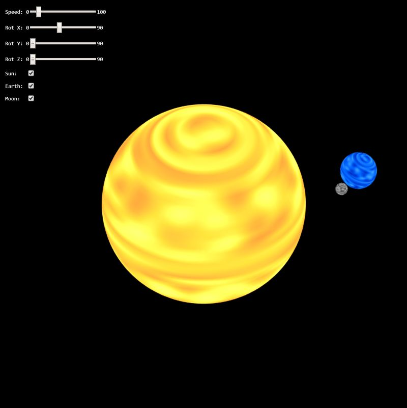

New Jersey Institute of Technology: CS 438 002
Interactive Computer Graphics Spring 2020
Assignment 2
Author: Last Name, First Name, Student Number
Date: 2/14/2020
Due: 2/27/2020
Go to Assignemt Home | Task 1-3
Task 1 (8 points)
Implement a model matrix for the Earth model using a concatination of canonical transformations and set it as the u_model uniform variable in the shader.
The Earth should
- be scaled accordingly
- rotate around its axis
- be tilted by -23.44 degrees with respect to (wrt) its orbit axis
- orbit around the sun.
Don't forget that the Earth's tilt angle is constant in the x-y-plane!
Be aware of the proper order of the transformations!
Additionally, set its u_color uniform variable accordingly for set the planets color.
Task 2 (8 points)
Implement a model matrix for the Moon model using a concatination of canonical transformations and set it as the u_model uniform variable in the shader.
The Moon should
- be scaled accordingly
- rotate around the Earth
- be tilted by -5.14 degrees with respect to (wrt) its orbit axis around the Earth in the x-y-plane
- orbit around the Earth
- orbit with the Earth around the Sun.
Be aware of the proper order of the transformations! Additionally, set its u_color uniform variable accordingly.
Task 3 (4 points)
Use the uniform vec3 u_color to combine it with the provided attribute vec3 a_color in order to create shading for the planet. Be creative! There is no "right" way to create this color, so invent it in order to obtain a color for planets which satisfies you.
The attribute vec3 a_color contains noise values sampled from Perlin Noise distribution. The noise is given in the range between [0..1] and is the same in all three channels of a_color.
Remark: if you are interested how the sphere is created and the noise is sampled, check the function sphereGeometry(...).
Results
Your result should look similar like on the image below:
WebGL Canvas
Documentation
Please write a short report here. It should list what you have implemented, as well as a brief discussion and your conclusions. Also add as many comments in your code as possible---it will help us in judging your work.
Happy Coding !
Instructor: Assoc. Prof. Dr. Przemyslaw Musialski
Email: przemyslaw.musialski@njit.edu